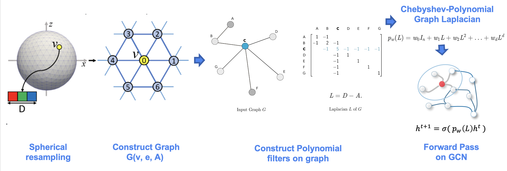

Hybrid AI Model Architecture
Our hybrid model for AIBEDO consists of two data-driven components: spherical-Unet for spatial network modeling and multi-timescale Long Short-Term Memory (LSTM) network for temporal modeling. Both components will be infused with physics-based constraints to ensure the generalizability of spatial and temporal scales.
Spatial Data-Driven Component
Spherical U-Net Architecture
Our model framework will specifically focus on “Spherical U-net architecture”. U-net is a specific form of convolutional neural network (CNN) architecture that consists of pairs of downsampling and upsampling convolutional layers with pooling operations. Unlike regular CNNs, the upsampling feature channels help the model learn the global location and context simultaneously. This technique has been proven extremely useful for biomedical applications and recently has been adopted in the earth sciences. While this is a more effective technique, one of the limitations of U-net architecture when applied to earth sciences is the inability to capture the spherical topology of data. Typically they are resolved by including boundary layer conditions/constraints. In our approach, we adopt a variant of U-net called “spherical U-net” for modeling the spatial component of AIBEDO, which is a geodesy-aware architecture and hence accounts for the spherical topology of Earth System data alleviating the need for external architectural constraints.

The model uses special convolutional and pooling operations for representing spherical topology through Direct Neighbor (DiNe) convolution and spherical surface pooling operations. Also, the model takes input in the icosahedral surface for the better representation of the earth surface by resampling from the original 2-dimensional NetCDF grid data.
Sampling Module
Typically, models use climate data in a uniform 2D rectangular gridded pattern. While this may suffice local/regional modeling attributes, they do not capture the physical/geodesy properties of the Earth, particularly as the focus moves away from the equator. For this reason, we developed a geodesy-aware sampling that converts 2D rectangular gridded coordinates to a geodesic grid type. There are several ways a geodesic grid can be manifested. Our method allows the modeler to choose the target gridding type between two such mesh types: (a) Icosahedral, (b) Healpix.
Icosahedral Grids: Icosahedral grids consist of a certain number of equiangular triangles to form a convex polygon, called Icosahedron. The triangles are formed by equally spaced grid points to form a sphere. The number of grid points are defined by their levels.
Healpix Grids: Healpix is a curvilinear partition grid type made up of equal area quadrilaterals. Unlike icosahedral grids, they are manifested as pixels, and the total number of pixels in a Healpix grid is calculated as follows:
Interpolation Module
We use the PyGSP library in Python to perform the grid transformation. It is commonly used for various graph operations to use in signal processing or social network analysis (e.g., Erdos-Reyni network). We first develop a ‘backbone’ structure of a spherical coordinate system (icosahedron, healpix, etc.). The properties of the spherical coordinates, such as levels or sub-divisions, are given as input. At this point, the coordinates are simply graph networks. In the next step, we assign latitude and longitude values to the graph network (x, y) so that they can be manifested in a geographical coordinate system. Finally, we use the raw data from reanalysis or ESM output and perform bilinear interpolation to obtain the final spherically-sampled data.

Model Library Module
We have created a library of models, ranging from regular Convolutional Neural Network (CNN), CNN-Autoencoder, Vanilla U-net to Spherical U-net architectures.This allows the modeler to explore the model performance and computational needs of different types of deep learning architectures. The sampling module is independent of the model library. There exists a function that combines the interpolated dataset obtained from the sampling module with the desired model architecture chosen by the modeler as shown in Figure.
Temporal Data-Driven Component
While the spatial model maps cloud properties with circulation and regional climate variables for a given step, the temporal component aims to predict the output for the next time step for a set of input conditions. Our goal to model temporal component is to initially understand how the circulation, precipitation, and temperature could change over time and subsequently observe if there are any patterns of climate tipping points. The tipping point characterization in our model does not intend to model the dynamics of nonlinear feedback loops in the earth system, but we would look at the large-scale trends over time at the decadal scale first, and then narrow down to any changing trends in seasonal scale to identify “early-onset” of tipping points.
Multi-timescale Long Short-Term Memory (LSTM) Networks
We use two distinctive LSTM networks to implement this functionality: one for modeling long-term climate impacts at the decadal scale (${LSTM}_d$) and another for modeling shorter-term seasonal changes (${LSTM}_s$). We will run the decadal-scale model ${LSTM}_d$ first, where we will make yearly predictions. The hidden states of ${LSTM}_d$ at every year will then be used by ${LSTM}_s$ as initial states to make monthly predictions. Since the two LSTM branches may have different hidden sizes, we will feed the states through a linear state transfer layer. Figure ** shows an illustration of a multi-time scale LSTM network.
PARC team is implementing the temporal model using two training schemes:
Teacher forcing strategy: we are designing the both LSTM approaches as feed-forward networks, where the ground truth from a prior time step will be used as input
Curriculum learning strategy: we will increment the task difficulty by gradually increasing the rate of using predicted value from current time step by feeding to the input of next time step prediction.